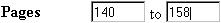
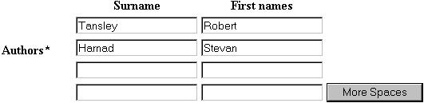
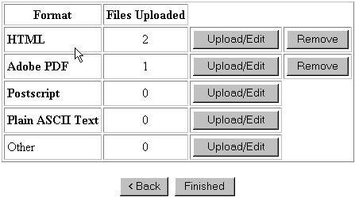
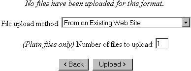
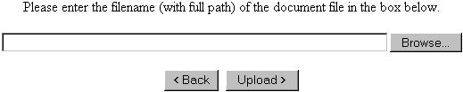
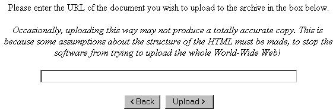
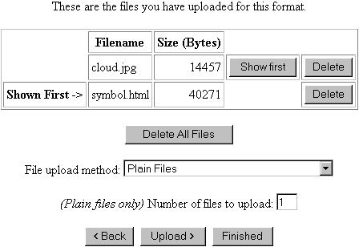

The depositing process is divided into a number of stages. You can move between these stages by using the ``Back'' and ``Next'' buttons at the bottom of each screen. This should be familiar to those accustomed to using the ``wizard'' style of interface popular on many modern operating systems.
Don't worry about losing information you've entered when you press the ``Back'' button on a form: The system will store everything you've entered when you press it. However, you should not use your browser's ``back'' button when you are depositing papers.
Each stage of the process is described in the following sections.
In this screen, you should select the one option on the list that best described your paper, for example ``conference paper'' or ``journal paper (paginated).'' The option you choose here will affect what bibliographic information about your deposit the system will collect in later stages.
Then click on the ``Next'' button.
The archive can link together different versions of the same paper, as well as commentaries and responses to commentaries. These enable a reader to move easily around those versions, commentaries and responses.
If the paper you are depositing is a later version of a paper you previously deposited in the archive, enter its ID code into the ``Later Version Of'' box. If you used the ``Clone'' option on the ``Review Documents'' page, then this box will have already been filled out for you, but can be overwritten.
To find the ID of a document, use the archive's Search feature to find the archive. You may wish to have a second browser window opened in which to perform this search, so that you can copy and paste the ID code across to this form.
If you are depositing a commentary on a paper in the archive, enter its ID code in the ``Commentary On'' box. If you are responding to a commentary, enter the ID code of the commentary you are responding to in this box.
You can make sure that you've entered the correct ID codes by clicking on the ``Verify IDs'' button at the bottom of the page. The system will then show you what papers the ID codes pertain to, so you can make sure you've entered the right codes. Note that the system will not let you proceed with the deposit if either ID code you enter is invalid.
You can of course leave either box empty if your paper is not a later version of another, a commentary or a response. Click on the ``Next'' button when you're sure the information you've entered is correct.
Note that you cannot deposit a later version of a paper that has been submitted by someone else.
Next you will be asked to enter bibliographic information about your paper. The exact details that are required will vary depending on the deposit type you selected in the first stage.
Above each input field will be a short explanation of what should be put in the field. To the left of each input field is the field name. If the field name has an asterisk, the field must be filled out before the paper can be deposited; other fields are optional.
The following are the types of input field you may see:

Figure 7: Page Range Input Field
In the ``first names'' column, you can just enter initials. However, if you are entering more than one initial, please add a space between them. For example, enter R. H. and not just RH. (The dots are optional.)
To remove names from a list just remove the surname from the relevant box and leave it empty. Don't worry about leaving a blank box in the middle of the list; the system will ``bunch up'' the list.

Figure 8: Inputting a List of Names
Once you've entered the relevant information, click on the ``Next'' button. If there are any omissions from the data, the system will explain what is wrong and re-present the form so you can fix the problems.
As with user records, most browsers will allow you to use the tab key to move between the input fields, allowing you to enter the information quickly.
In the subject categories stage, you should select the subject or subjects from the list that best represent the content of your paper. Please try and be as accurate as possible here, and please don't just select lots of categories if you're unsure, just pick the categories you are sure of.
If you think there's a serious omission from the subject category list, you can suggest a new category in the two boxes below the subject list. Note that you shouldn't expect the archive to necessarily agree with your suggestion; don't be offended if they don't add your suggestion. This box is there purely for you to suggest categories you really believe are serious omissions.
Once you've selected your subject categories, click on the ``Next'' button.
This page shows you an overview of the document files you have uploaded to the archive. The table shows the list of formats you can upload on the left, and the number of files you have uploaded in that format in the middle column. In the example shown in figure 9, 2 files have been uploaded for the HTML format (perhaps an HTML text file and a .gif figure image file), and one PDF file has been uploaded.

Figure 9: Document Storage Formats Display
If you want to upload some files for a format, or remove some files you've already uploaded for a format, click on the relevant ``Upload/Edit'' button. When you do this, you'll be presented with the ``Document file upload'' screen described in the next section.
To remove all of the files for a format completely, click on the relevant ``Remove'' button.
Note that you must upload files for at least one of the formats shown in bold type. In figure 9, you must upload your paper in any one of HTML, a PDF file, a postscript (PS) file, or plain ASCII text.
The ``Other'' format allows you to upload the document in any other format you think may be useful. For example, you may wish to upload a Microsoft Word document.
When you're happy that you've uploaded all of the document files, click on the ``Finished'' button. Later, you'll have a chance to make sure that the uploads have all worked, and to come back and fix anything that's amiss.
Once you've clicked the ``finished'' button on this page, you'll be taken to the ``Deposit Verification'' page described in a later section.
If there are no files uploaded in a particular format, you'll be presented a display similar to that shown in figure 10. From the pop-up menu you can select how you'd like to upload files to the archive:

Figure 10: Selecting the Upload Method
Now click on the ``Upload'' button.
If you selected ``plain files'' or are uploading a compressed file, you'll see a display similar to figure 11. You can either type in the full filename and path of the document file or compressed file into the text field, or (recommended) click on the ``Browse...'' button, and select the relevant file using the file selector1. If you're uploading more than one file, there will be a corresponding number of these fields to fill out.

Figure 11: Document/Compressed File Upload Field
If you selected ``from an existing Web site,'' you'll see the display in figure 12. Enter the full URL of the first page of the actual document; don't just enter the URL of the Web site the document appears in or the URL of an index or contents page. See the section ``uploading from an existing Web site'' below.

Figure 12: Uploading Documents from an Existing Web Site
When you've entered the filenames or URLs, click on the ``Upload'' button. You'll then be taken back to the ``Document File Upload'' screen, and if everything's gone well, it should look something like the display in figure 13.

Figure 13: Uploaded Files
At least one file needs to be shown first. In many cases (e.g. PDF, Postscript) there will only be one file; if you've uploaded many files you will need to select the one to be shown first. This should be the first file in the document that a reader should be presented with; the .html file if your document is in HTML format, or the contents page if your document is spread over several uploaded several HTML documents. Use the ``Show First'' button to tell the system which file should be shown first.
The ``Delete'' buttons on the right of the table can be used to remove individual files that you've uploaded in error. ``Delete all files'' will wipe the slate clean (for this document storage format only) so you can start again.
You can continue to upload more files as before. If you've uploaded all necessary files, click on ``Finished''. This will take you back to the ``Document Storage Format'' page.
When you give the archive a URL to retrieve your document from, the archive stores a copy of the file stored at that URL. If the URL is an HTML file, the archive will also copy the images associated with that HTML file, and other HTML files linked to it.
You must supply the URL of the first page of document itself: NOT the URL of the whole Web site, or the URL of any contents page listing multiple documents, index page or abstract page.
http://www.myinstitution.edu/~myhomepage/paper.html
And NOT
www.myinstitution.edu/~myhomepage/paper.html
In order to prevent the archive from trying to copy the whole World Wide Web by following every single link, some rules are applied when the system collects your document:
This method of uploading papers cannot have a guaranteed 100% success rate. However we have been using it here at Southampton for a number of months and it usually works very well.
If something does go wrong, it's normally best to select ``delete all files'' from the ``Document File Upload'' screen, and try another uploading method.
This page will display the abstract page for your document as it will appear in the archive. You should carefully check that all information has been uploaded correctly. Note that your paper will not appear in the ``available versions'' or ``commentary/response'' lists at the bottom of the page; this is normal.
You should also check that the document files have been uploaded correctly, including any associated figures and links. If you spot a mistake, you can use forms' ``back'' buttons (not the browser's ``back'' button) to cycle back through the depositing process and fix any mistakes.
If you're satisfied that everything is correct and has been uploaded correctly, click on the ``Deposit'' button to deposit your paper in the archive. It will then be put in the archive buffer. Congratulations; you're contributing to the freeing of research literature!